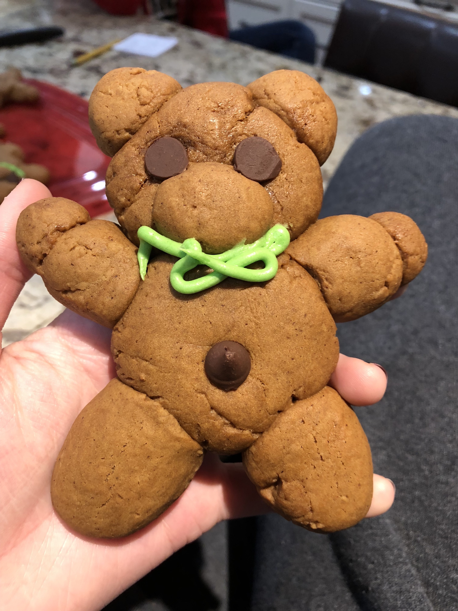

Gingerbread Teddy Bears

Jolly ginger teddies have crisp outsides
and soft, chewy insides.
Makes:
Prep Time:
Sit Time:
Bake Time:
Preheat:
16 cookies
2 hours
≥ 2 hours or overnight
8-10 minutes
350ºF
Ingredients:
- 1 cup butter or margarine
- 2⁄3 cup packed brown sugar
- 2⁄3 cup dark corn syrup, light corn syrup, or molasses
- 4 cups all-purpose flour
- 1 1⁄2 teaspoons ground cinnamon
- 1 teaspoon ground ginger
- 3⁄4 teaspoon baking soda
- 1⁄2 teaspoon ground cloves
- 1 beaten egg
- 1 1⁄2 teaspoons vanilla
- Miniature semisweet chocolate pieces
- Decorating icing (optional)
Directions:
- In a saucepan, combine butter, brown sugar, and corn syrup/molasses. Cook and stir over medium heat till butter is melted and sugar is dissolved.
- Pour into a large mixing bowl and cool 5 minutes. Meanwhile, combine flour, cinnamon, ginger, soda, and cloves.
- Add egg and vanilla to butter mixture and mix well. Add the flour mixture and beat till well mixed.
- Divide the dough in half. Cover and chill at least 2 hours or overnight.
- To make each teddy bear, shape the dough into one 1-inch ball, one ¾-inch ball, six ½-inch balls, and five ¼-inch balls.
- Shape the bears:
On an ungreased cookie sheet, flatten the 1-inch ball to ½-inch height for the body.
Attach the ¾-inch ball for head and flatten to ½-inch height.
Attach the ½-inch balls for arms, legs, and ears.
Place one of the ¼-inch balls on head for nose.
Arrange remaining ¼-inch balls atop ends of arms and legs for paws.
Use miniature chocolate pieces for eyes and navel.
- Bake at 350º in the oven for 8-10 minutes or till done. Carefully remove and cool. If desired, pipe on bow ties with Decorating Icing.
Decorating Icing:
- Combine ½-cup sifted powdered sugar and enough milk or light cream (about 2 teaspoons) to make of piping consistency.
- Tint with one or two drops of food coloring.
Source:
Better Home and Gardens Cookies for Christmas
©Copyright 2019